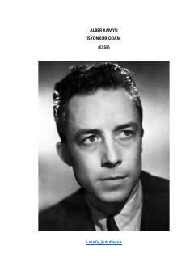

IOKamyuning isyon, san'at va ozodlik haqidagi buyuk falsafiy essesi.
Albert Kamyuning 'Isyonkor odam' asari isyon, san'at va inqilob mavzularini falsafiy esse shaklida tahlil qiladi. Muallif san'atning voqelikka munosabati, inqilobiy harakatlarning san'atga yondashuvi va go'zallikning inson hayotidagi o'rni haqida chuqur mulohazalar yuritadi. Asar Nitsshe, Marks, Tolstoy va boshqa mutafakkirlarning san'at va isyon to'g'risidagi qarashlarini qiyosiy tarzda ko'rib chiqadi.